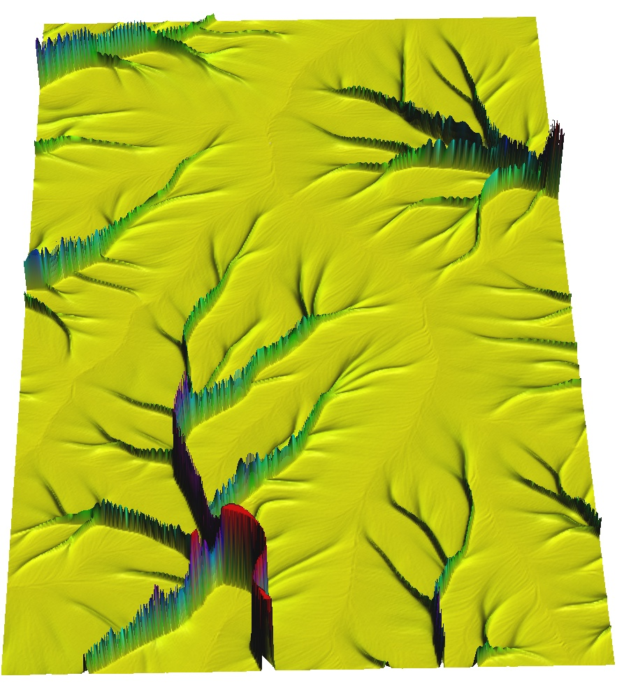
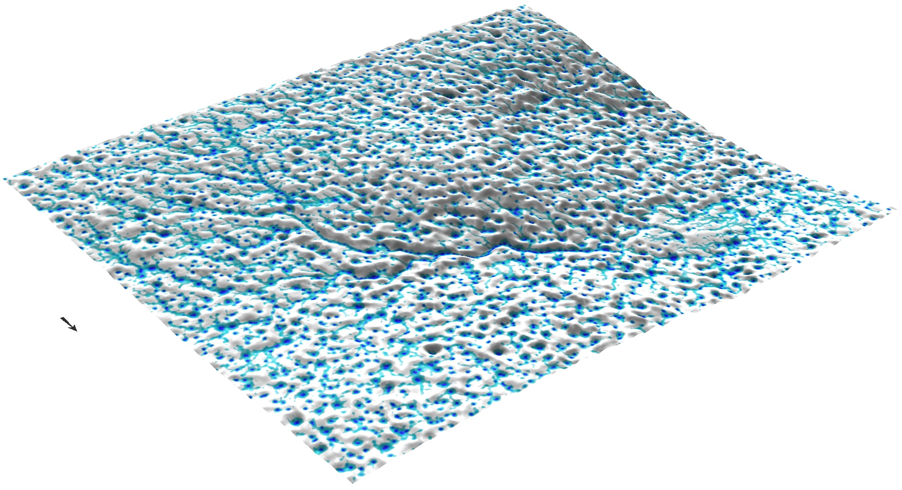

Process-based mass transport simulation
Helena Mitasova, Anna Petrasova, Vaclav Petras
Moving the course
- 5103 Tu,Th 3pm - 4:15pm (conflict with geoforum everyother thursday)
- 5103 Tu,Th 8:45 - 10am
- 3214 Tu,Th 10:25 - 11:45 (GRASS needs to be installed)
- 2115 Tu 1:30 - 2:45, Th 10:25 - 11:45? (GRASS needs to be installed)
Learning objectives
- modeling flow / transport with sources and sinks
- reduced complexity models
- numerical methods for PDE models
- implementation
- applications
Modeling diffusion, flow, transport
- natural systems: geosphere, biosphere, atmosphere
- socio-economic systems: people, materials, trade
- coupled natural and socio-economic systems
Transport by water
- sediment transport and erosion / deposition
- pollutant transport
- coastal evolution: waves, currents and storm surge
Transport by wind
- sand and dust, dune migration
- air pollutants, aerosols
- pathogens, pollen
Transport by gravitation
- landslides and debris flows
- avalanches
- glaciers
Motivation for simulations
- pollution prevention, control, and mitigation
- design of conservation measures
- hazards prevention, response, management
- sustainable land management
Modeling diffusion, flow, transport
- diffusion with source
- diffusion with drift and source
- diffusion with drift, proliferation and decay = sources and sinks
Discuss how these processes relate to computing and simulations in your projects
Modeling diffusion, flow, transport
- Diffusion in geomorphology: long-term landscape evolution
change in elevation over time at $x$ is proportional to change in gradient at $x$
$$ {\partial z(x,t) \over \partial t} = U - \kappa \nabla q_s(x,t) = U - \kappa {\partial^2 z(x,t) \over \partial x^2} $$
-
$q_s(x,t)$ = \kappa \nabla$ is flux, $z(x,t)$ is elevation, $x$ is location and $t$ is time, \kappa is diffusion constant
What is second order derivative of elevation field?
Fundamental solution
- Given a unit impuls $\delta(x-x_0)=n(x,t=0)$ the fundamental solution of
diffusion equation is
-
$$ n(x,t) = {1 \over \sqrt{4\pi D_0 t}} e^{{-(x-x_0)^2} \over ({4D_0t)}}$$
- a Gaussian with $ N(x_0, \sigma^2 = 2D_0t) $
- solutions for the rest require numerical approach, but special cases have explicit solutions
Green's function, path sampling solutions
Stochastic method of solution
Diffusion with drift
- This describes diffusion in a medium which {\it drifts} with
constant velocity ${\bf v}_0$. GF:
$$
G_d(...)={1 \over (4\pi t)^{3/2}}
e^{- |{\bf r}-{\bf r}'-{\bf v}_0t|^2/4t}
$$
- Of course, this process can be also simulated by sampling. The walk will propagate as
$$
{\bf r}^{(i)}(t+\tau)={\bf r}^{(i)}(t)+{\bf v}_0\tau + \vec\eta^{(i)}
$$
- where ...
Diffusion with drift and proliferation / decay
- Inclusion of a constant proliferation/decay term $U_0$:
$$
[\partial n({\bf r},t) /\partial t - \nabla_{\bf r}^2n({\bf r},t)
+\nabla\cdot(n({\bf r},t){\bf v}_0) +U_0 n({\bf r},t)]=0
$$
- Disregard for a moment the diffusion and drift terms so that the equation simplifies to
$$
{\partial n({\bf r},t)) \over \partial t} = -U_0n({\bf r},t)
$$
- This reminds us of a rate process, for which we have
$n({\bf r},t)\propto \exp(-U_0t)$. Enlightened by this insight we can write
$$
G({\bf r},{\bf r}',t)= e^{-U_0t}G_d(...)
$$
- How could this be captured by the sampling process ? We need to
introduce the walker {\it weight} which records how much of it has survived
or how much it has gained in time. The walker weight will evolve as
$$
w^{(i)}(t+\tau)=w^{(i)}(t)e^{-\tau U_0}
$$
- Note that this is multiplicative as it is in GF and assuming
positive $U_0$, the walks diminish exponentially quickly in time and
the solution will be given by
$$
n({\bf r},t)={\rm distr}
[\{
w^{(i)}(t)\delta({\bf r}-{\bf r}^{(i)}(t))
\}_{i=1}^{M_{walk}}]+\epsilon_{stat}
$$
Reduced complexity models
Solution of continuity and momentum equations for
a steady water flow that is close to kinematic wave approximation
$$ \partial h({\bf r},t)/\partial t =0 \quad \longrightarrow \quad \nabla \cdot [ h({\bf r}){\bf v}({\bf r})] = i_e({\bf r})$$
explicit solution
$$ q = c.A $$
where A is contributing area
Water flow: methods comparison

geometry based methods, kinematic wave, approx. diffusion wave
Path sampling method: accuracy
Error is proportional to $1/\sqrt N$, $N$ is number of particles

Visualization


Applications
Surface water

Applications
Surface water

Applications
- natural and socio-economic processes
- generalize the concept - define appropriate gradient field and density
- how does your research relate to diffusion, dispersal, flux and related processes?
Example: growing cities - inverse of population density or economic opportunity fields